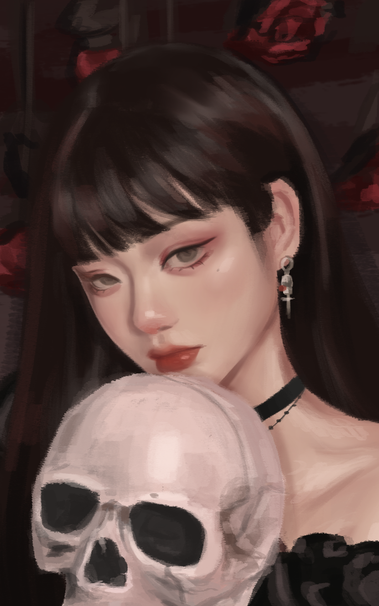
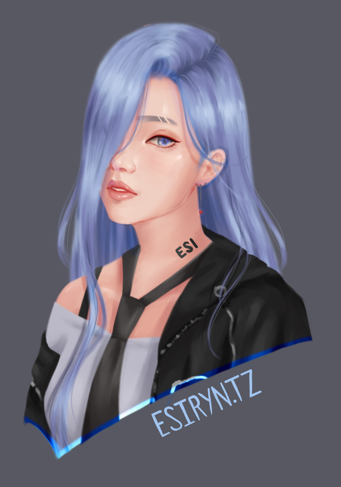
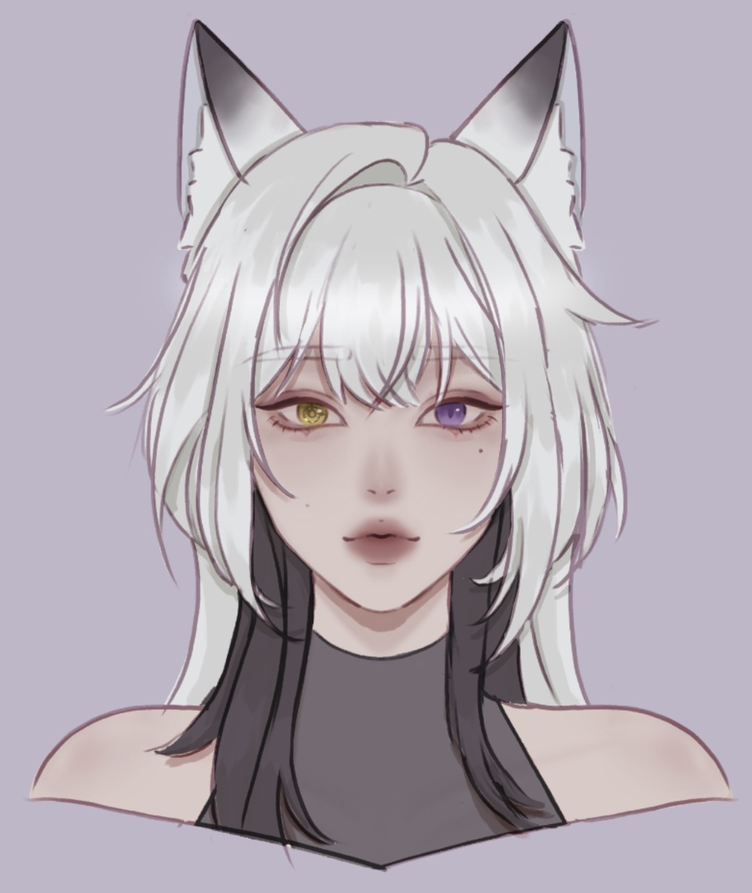

The Gallery
Preface
Drawing used to be something that I thought I could not live or breathe without. I went from drawing every single day, whether in class or when I should be socializing with other people my age, to not picking up a pencil for that purpose at all.
I was praised for my “skill” and “talent”, and it felt like I was getting better exponentially. I saw myself as the “good artist,” regardless of where I was, and I thought my future would have art as a key component.
But all things that go up must come back down.
And sometimes, the higher something flies, the harder the crash.
I crashed.
It has been years since I have felt any real passion for art, strangled by my own desire for perfection and my over-criticism.
I can no longer complete an illustration because nothing I drew looked good enough in my eyes, and it felt like I hit a wall where I can no longer get better.
But I still desperately want to draw again, to climb back up to that height I had been standing at years ago.
My solution is to look back at my old works, even if it means cringing at every mistake I have made along the way.
Especially if I cringe or want to cover my eyes, because it means I have at least improved enough to identify my mistakes, and that is a start.
That way, perhaps I can rekindle my motivation and reshape my perspective on creating art. In the process, I hope that sharing my experiences and illustrations can also help those in a similar ditch to the one I found myself in.
Overview
Just by looking at the dates I uploaded my illustrations to a drive, I start wondering how I had so much time and passion for drawing back then. For a period of time, it seemed like I would finish an illustration every two or three days. Even back then, though, I was still critical of myself and only uploaded those I deemed “worthy”.
I thought about how I could categorize them.
Should I categorize them by color? Background? Subject? All for the sake of aesthetics and visual cohesiveness?
But that doesn’t seem right.
The grouping method that I came up with is far less obvious, but far more important.
I decided to categorize my illustrations by motivation instead, because that is what I have lost. The following categories are “made for others”, “studies”, and most importantly, “OC Illustrations”.
Made For Others
The name of this category is self-explanatory. Some of the drawings I made were influenced by external factors. As someone who doesn’t like being told what to do, especially in the creative department, I did have more “successful” illustrations in this category than I thought.
Though lacking in skill, I did receive some commissions back then, the most notable one being the girl with the headphones and the mic set-up. I don’t remember exactly why I chose that pose or situation for my commissioner’s character, but I do still remember receiving fifty dollars for the illustration quite vividly. For eighth-grade me, stuck inside during COVID-19, that might as well have been gold.
The other two illustrations, both coincidentally with pretty similar hairstyles, one depicting the girl lying on the rug and the other with a dark background, were both art trades. The idea was that two or more artists would come together and draw each other’s characters. I don’t remember much from either experience except that I never received my illustration for one of them, and the other was basically a lazy copy-and-paste version of an existing illustration, modified to fit my chosen character.
The last one in this category, featuring the girl with very vibrant hair and a unicorn horn, was my submission for a “Draw This In Your Style” challenge. It is what it sounds like: a popular artist would post an illustration on their social media, and those interested would draw it in their own style. I remember participating in this because it was a quicker way for someone to gain recognition if their pieces were well-received by other viewers.
add slideshow of images
Studies
Art studies are both the best and worst things I have ever done for my art journey.
On the one hand, art studies are great for most people for helping them learn or practice drawing, such as clothing or anatomy. I also recall studying different photos to learn how to incorporate more interesting lighting in my drawings.
The issue was that after a certain point, it felt like I had to use some sort of reference, no matter what, because whatever I created off the top of my head felt severely lacking in comparison to something I heavily referenced.
Being overly reliant on references and other works also became one of my constraints.
Actual anatomical and hair studies are not very interesting to look at, so I included two drawings I did as an art study of illustrators I really liked back then. The elf girl is an art style study of WLOP, known for creating very beautiful compositions with simple strokes. The bunny girl illustration is an art study of Shal E., who is less well known, but I admired them all the same because I found their art style aesthetically pleasing.
The last drawing of the girl with the skull was a study I did of a photo last summer to study different textures. I experimented with using the smudge tool less when shading and instead used a brush tool to create a rougher and more interesting texture. I wanted to draw more last summer, but unfortunately, that was the only piece I completed since then.
add slideshow of images
OC Illustrations
OC illustrations, otherwise known as original character illustrations, is arguably the most important category so far.
I have many OCs, but the ones I have included are all the same character, meant to symbolize my “persona”, if you will. The appearance and story change along with me as I am exposed to different experiences, and my preferences shift.
The illustrations included do not fully capture how much my character has changed over the years, since the earliest version would likely be a crumpled piece of paper from when I was five.
However, the versions captured digitally are similar, featuring blue eyes and some type of dark hair with teal tips, as seen in the first two illustrations. Though in different outfits and environments, that was a design I stuck with for a while, until I randomly decided to give my character all blue hair since that was easier to draw.
The last drawing, the fox girl with white hair, seems to be a completely different character, but conceptually, it is meant to be the same one as its dark-haired counterparts. It isn’t a full illustration like the others, but I thought it was important to include it since it was drawn a few weeks ago. Based on recency, that version of my character would be the most accurate reflection of who I am now and how drastically I have changed since the period when I drew often, to now, when each stroke is a struggle.
add slideshow of images
The Collection
to be formatted







Data
visualization to be added
Coda
to be added